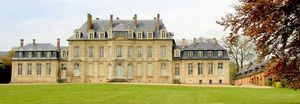
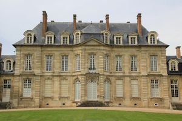

Recensement Jean-Claude Truffet
| Département | 80 — Somme |
| Canton | Ailly-sur-Noye |
| Commune | Prouzel |
| Type d'édifice | Château |
| Période d'origine | XV |
| Coordonnées GPS | 49° 49' 08" Nord, 2° 12' 06" Est |


PROUZEL, le château passa par legs successifs, vers 1490, aux Le Scellier puis aux Villepoix, avant d'être vendu en 1696 par Charles de Villepoix à Adrien Creton, seigneur de Wiameville, conseiller du roi, à qui l'on doit la construction, en 1699 et 1700, du château actuel. Louis-Joseph Creton le légua à sa mort en 1777 à son neveu Louis-Joseph Gaillard seigneur de Boëncourt, dont la fille épousa le général de Lamoricière, Le domaine fut acquis en 1880 par le baron de l'Épine, arrière-grand-père du propriétaire actuel. Le château de Prouzel se distingue par la hauteur de son étage, ses fenêtres et sa toiture à lucarnes. Un parc important lenvironne. Le château de Prouzel appartenait au général de Lamoricière qui y mourut en 1865. Christophe Louis Léon Juchault de Lamoricière, général de l'Armée Française, député de la Sarthe, ministre de la guerre de la Deuxième République en 1848, s'était distingué en Algérie, à la prise d'Alger en 1830 organiser le premier bureau arabe à la défaite du d'Abd el-Kader expulsé en 1852 rentré en France en 1857 ou il fut résigné en châtelain de Prouzel, décéda au château le 11/09/1865. Éléments protégés MH : le château de Prouzel et son parc : inscription par arrêté du 27 avril 1963.
PROUZEL, la construction du château de Prouzel se trouve au Sud-Ouest d'Amiens. Une longue allée d'honneur à la Française conduit au château bâti en 1699, occupé par les Allemands en 1940, l'intérieur subit pendant cette période, de graves dégâts. La construction du château, à l'emplacement d'une ancienne ferme médiévale, exclusivement en pierres, dressé au milieu dun parc de 12 ha, situé sur un plateau qui domine la Vallée de la Selle. Le château est constitué de plan rectangulaire dun corps de logis flanqué de deux ailes en pierre alliant les styles XVIIe et XVIIIe siècle. L'édifice de style classique a été construit en pierre. Il s'élève sur deux niveaux surmontés d'un toit à la Mansard. Aujourd'hui, si cette demeure a retrouvé son aspect d'origine, elle le doit au baron Gérard de l'Epine qui mit tous ses efforts à la restaurer de façon exemplaire. Une allée à la française mène au château à la fois simple, noble, harmonieux et discret. L'élévation est à deux étages pour alors que les deux ailes basses ont une élévation à un étage surmonté d'un toit à la Mansart. Le château de Prouzel se distingue par la hauteur de son étage, ses fenêtres et sa toiture à lucarnes. Construit à la charnière de deux siècles, cette demeure est le reflet de tendances diverses, alors que les hautes toitures et les grandes fenêtres sont caractéristiques du XVIIe siècle, l'emploi exclusif de la pierre, l'appareillage à refends soulignant les angles des avant-corps et des ailes, et l'élévation élégante et équilibrée des façades le classeraient volontiers parmi les édifices du XVIIIe siècle.
Famille du baron Gérard de l'Epine "
Prouzel GPS : 49° 49' 08" Nord, 2° 12' 06" Est